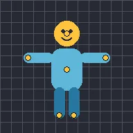

Punto de marioneta

Deforma la capa como una marioneta: coloca puntos sobre ella y arrástralos o anímalos; la imagen los sigue con suavidad.
Puppet Pin curva una capa con alfileres. Activa Añadir alfileres y toca la capa donde deba doblarse, hasta 32 alfileres. Después, desactiva Añadir alfileres y arrastra un alfiler en la vista previa, o toca su valor X o Y en la lista para escribir una posición. La imagen que hay bajo un alfiler que arrastras se mueve con él, los alfileres que no mueves mantienen la imagen en su sitio y un alfiler nuevo en una capa que ya está curvada deja la imagen tal como está.
- Atenuación controla cómo se reparte la curvatura: los valores altos la mantienen cerca de los alfileres que mueves y los bajos la reparten de forma suave por toda la capa.
- Para animar un alfiler, toca su nombre en la lista y usa el botón de fotograma clave como con cualquier ajuste. Consulta Fotogramas clave y suavizado.
- La flecha junto a un alfiler lo devuelve al punto donde empezaba su parte de la imagen, lo que quita la curvatura de ese alfiler. La papelera elimina el alfiler y sus fotogramas clave.
- Aplicar a los hijos curva también las capas hijas, como si formaran parte de la imagen de esta capa.
- Coloca alfileres en las partes que deban quedarse quietas, como el cuerpo cuando mueves un brazo.
Ajustes
| Ajuste | Tipo | Rango | Predeterminado |
|---|---|---|---|
| Atenuación | Número | 0.1 a 4 | 1 |